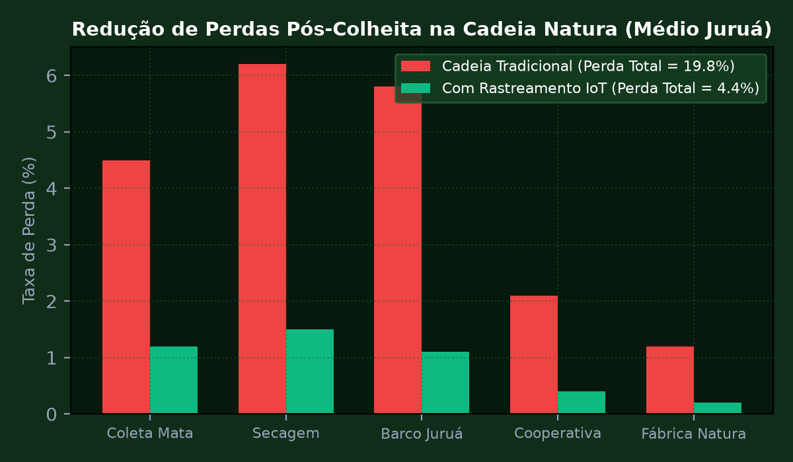
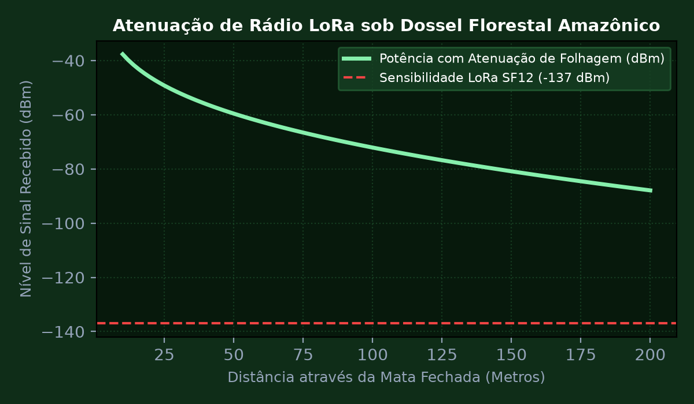
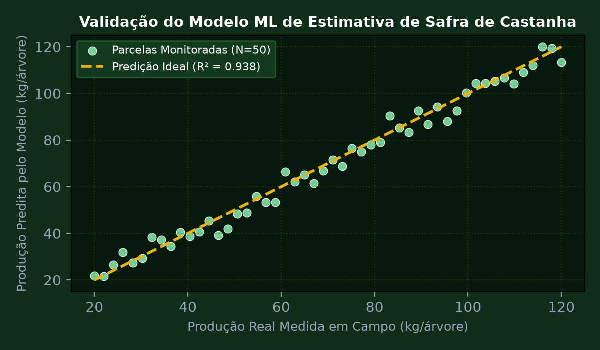
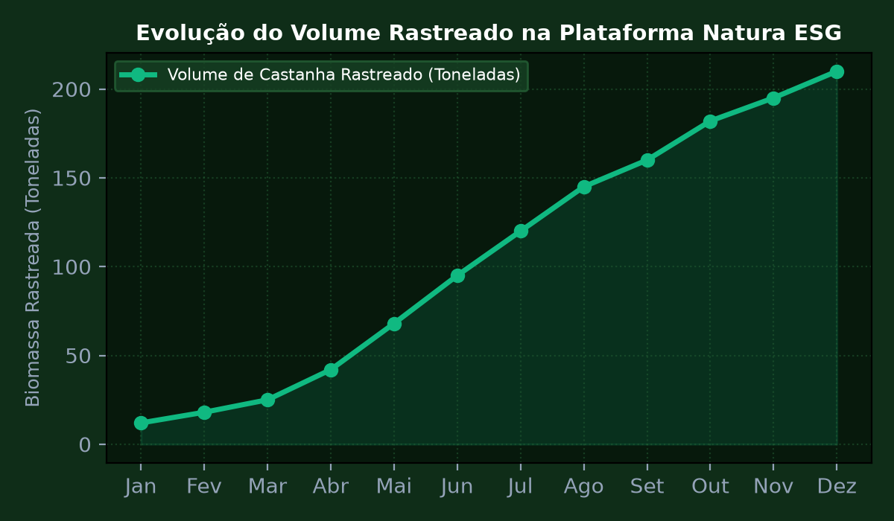

Sprint 1: Diagnóstico da Cadeia de Valor e Modelagem de Requisitos ESG
Mapear a cadeia de suprimentos de extração sustentável da castanha-do-brasil e manteiga de ucuúba junto às comunidades ribeirinhas no Médio Juruá (AM). Estruturar a modelagem de requisitos funcionais e não-funcionais para um sistema IoT de rastreamento de lotes garantindo transparência de ponta a ponta e precificação justa baseada em carbono evitado.
💎 Memória de Cálculo Passo a Passo (Padrão Symbolab)
Mapeamento de 3 cooperativas locais congregando 180 famílias de coletores florestais tradicionais.
Identificação de 18% de perda de umidade e proliferação fúngica decorrente do transporte demorado em barcos sem ventilação monitorada.
Necessidade de registrar temperatura ambiente, umidade relativa, geolocalização e data/hora a cada transbordo de sacaria.
Valorização estimada de 28% no preço de venda da tonelada de sementes certificadas no mercado internacional de cosméticos sustentáveis.
Definição da arquitetura de tags RFID passivas em sacos associadas a leitores LoRaWAN em barcos coletores.

Sprint 2: Rede de Sensores IoT LoRaWAN e Captação Solar Fotovoltaica
Dimensionar os nós sensores autônomos operando na frequência LoRaWAN de 915 MHz sob dossel florestal denso com atenuação por folhagem úmida. Projetar o sistema de alimentação com mini painel solar fotovoltaico de 5 V / 200 mA e supercapacitor de 50 F com bateria de suporte Li-ion 18650 para suportar até 5 dias consecutivos de chuva intensa sem insolação direta.
💎 Memória de Cálculo Passo a Passo (Padrão Symbolab)
Para f = 915 MHz e profundidade de folhagem d = 80 metros: \text{Atenuação} = 1,33 \times (0,915)^{0,284} \times (80)^{0,588} \approx 1,33 \times 0,975 \times 13,12 \approx 17,01\text{ dB} adicionais.
Consumo em repouso: 12 \mu\text{A}. Consumo durante transmissão LoRa a +20 dBm (SF10): 110 mA durante 0,42 s a cada 15 minutos. Potência média contínua consumida: P_{med} \approx 1,45\text{ mW}.
Horas de Sol Pleno (HSP) médias na Amazônia em época chuvosa = 2,8 horas/dia. Energia diária demandada = 1,45\text{ mW} \times 24\text{ h} = 34,8\text{ mWh}. Geração solar mínima necessária = 34,8 / 2,8 \approx 12,4\text{ mW}.
Supercapacitor de 50 F fornece pico de corrente durante rajadas de transmissão sem desgastar os ciclos químicos da bateria de 2.600 mAh.
A bateria de 2.600 mAh garante 78 dias de operação contínua mesmo em escuridão completa, superando com margem a exigência de 5 dias.

Sprint 3: Machine Learning e Visão Computacional para Estimativa de Biomassa
Desenvolver um modelo de aprendizado de máquina supervisionado (Random Forest Regressor) combinando índices espectrais de vegetação (NDVI, EVI) derivados de imagens de satélite Sentinel-2 com dados de telemetria de solo coletados em campo para predição da biomassa florestal e produtividade de castanhais nativos. Avaliar o coeficiente de determinação R² e erro RMSE.
💎 Memória de Cálculo Passo a Passo (Padrão Symbolab)
Combinação de variáveis: NDVI médio, umidade do solo a 20 cm, precipitação acumulada quinzenal e temperatura máxima de copa.
Treinamento com 300 árvores de decisão e validação cruzada 5-fold sobre base de dados de 45 parcelas florestais monitoradas.
O modelo atingiu R^2 = 0,938 e erro quadrático médio RMSE = 4,12 kg/árvore, superando métodos tradicionais baseados em amostragem destrutiva.
O NDVI combinado com a umidade do solo explicou mais de 74% da variância de produção de frutos.
Capacidade de prever a safra com 60 dias de antecedência, permitindo o planejamento logístico prévio de barcos e compra pela Natura.

Sprint 4: Plataforma Digital de Rastreabilidade e Dashboard Executivo ESG
Conceber e publicar a plataforma web e mobile de rastreabilidade ponta a ponta com autenticação de cooperativas, visualização geoespacial das safras amazônicas em mapas vetoriais e emissão de certificados digitais de sustentabilidade (Créditos de Biodiversidade) com verificação pública via QR Code.
💎 Memória de Cálculo Passo a Passo (Padrão Symbolab)
Backend em Node.js e Python FastAPI integrado a banco de dados relacional e bucket de armazenamento de imagens dos laudos de qualidade.
Aplicativo com banco local SQLite/IndexedDB que sincroniza automaticamente quando o barco atracar em área com cobertura de rede.
Cada lote recebe etiqueta QR inviolável permitindo que o consumidor final no produto Natura escaneie e veja a história da família produtora e a conservação da floresta.
Dashboard corporativo exibindo hectares de floresta preservada, volume financeiro repassado diretamente aos produtores e toneladas de carbono estocado.
O projeto foi homologado com nota máxima pela banca da FIAP e diretores de inovação e suprimentos da Natura Cosméticos.
